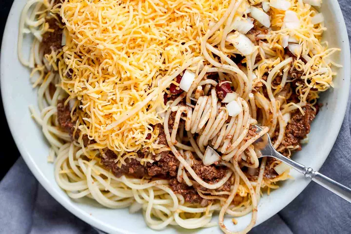

Cincinnati Chili

Description
Cincinnati chili is a meaty, rich, and uniquely spiced chili from
Cincinnati, Ohio. Serve the authentic Cincinnati chili recipe over hot
spaghetti with your choice of toppings. Can be cheese and oyster crackers.
Ingredients
For the chili:
- 2 pounds ground beef (80:20 is good)
- 1 (6-ounce) can tomate paste
- 4 cups water
- 1 (8-ounce) can tomato sauce
- 1 large onion, minced (about 3 cups)
- 6 cloves garlic, minced
- 3 tablespoons chili powder
- 1 teaspoon cumin
- 1 teaspoon cinnamon
- 3/4 teaspoon ground allspice
- 1/4 teaspoon ground cloves
- 1/2 teaspoon cayenne
- 2 teaspoons kosher salt
- 1 tablespoon apple cider vinegar
- 1 ounce unsweetened chocolate, optional
Options for serving:
- Oyster crackers
- FInely shredded mild cheddar cheese
- 1 (15.5-ounce) can small red kidney beans, drained and warmed
- Minced yellow onion
- Hot coocked spaghetti
Steps
- Cook the tomato paste
- Combine the ingredients in a pot
- Simmer gently, uncovered, for 2 to 3 hours
- Cool to room temperature, then refrigerate overnight
- De-fat the chili
- Warm and serve